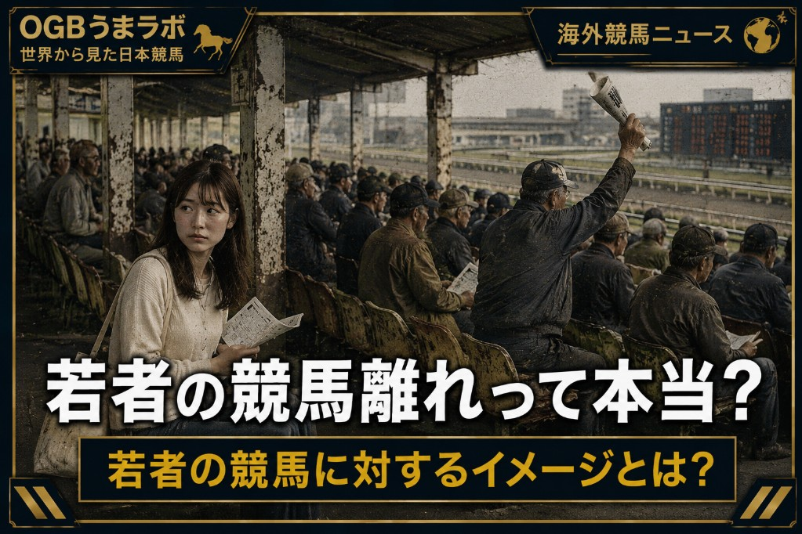

この記事はXに掲載された当時の原文です。情報は掲載時点の内容です。
【海外競馬ニュース】
若者の競馬離れって本当？
海外では近年、「若い世代の競馬離れ」がたびたび話題になります。
そんな中、英国競馬で大規模な改革プロジェクトが始まりました。
英国競馬統括機構のBHA（British Horseracing Authority）と、世界最大級のスポーツベッティング企業グループであるフラッター（Flutter）は、「フューチャー・オブ・レーシング（Future of Racing）」を立ち上げました。
これは、競馬業界が抱える課題を最新技術や新しいサービスで解決することを目的としたイノベーション支援プロジェクトです。
競馬業界が課題を提示し、その解決策を持つスタートアップ企業を世界中から募集。選ばれた企業には、競馬場や競馬関連施設で実際にサービスを試験導入する機会も与えられます。
今回、このプロジェクトには100社を超える企業が応募しました。
では、英国競馬は何を解決したかったのでしょうか。
その答えとなるのが、BHAが実施した大規模調査「プロジェクト・ビーコン（Project Beacon）」です。
この調査では、
・競馬は初心者には難しく感じる
・競馬は知識や技術より「運」で決まるように見える
・競走馬や騎手への感情移入がしにくい
・馬の福祉に不安を感じる
など、若い世代や競馬未経験者が競馬から距離を置く理由が明らかになりました。
こうした課題を解決するため、応募企業の中から11社が選ばれました。
選出された企業には、
・初心者向けの競馬学習サービス
・AR（拡張現実）を利用した新しい観戦体験
・競馬場での来場体験を向上させるサービス
・競走馬の福祉を分かりやすく伝える仕組み
など、それぞれ異なるアイデアを持つ企業が並びます。
今後は、これらのサービスを英国競馬で実際に試験導入し、本当に競馬ファンを増やせるのかを検証していく予定です。
つまり今回のニュースは、「100社が応募した」ことではなく、
英国競馬が、若者や初心者を取り込むために、競馬業界とスタートアップ企業が協力して実証実験を始めることを決めた
という点にあります。
実は、このような動きは英国だけではありません。
アメリカでも近年は、ケンタッキーダービーを中心に、若い世代へ向けた取り組みが進められています。
ファッション、音楽、SNSでの発信などを積極的に取り入れ、「競馬を観る日」ではなく「特別なイベントを楽しむ日」としての魅力を発信しています。
オーストラリアでも、メルボルンカップ・カーニバルでは競馬だけでなく、音楽ライブやグルメ、ファッションイベントなどを組み合わせ、若い世代や女性が気軽に競馬場へ足を運べる環境づくりが進められています。
では、日本はどうでしょうか。
日本でも一昔前は、「競馬場は汚くてガラの悪い中高年の男性ばかりが集まる場所」という印象を持つ人は少なくありませんでした。
しかしJRAは長年にわたり、競馬場のスタンド改修や飲食エリアの充実、キッズスペースや女性向け施設の整備などを進め、「競馬場へ遊びに行く」という新しいイメージづくりに取り組んできました。
地方競馬でも、大井競馬場や船橋競馬場をはじめ、多くの競馬場でスタンドの建て替えや施設のリニューアルが進み、キッチンカーによる食のイベントの開催など、個人だけではなく、カップルや家族向けの雰囲気づくりを前提に、以前とは大きくイメージが変わっています。
さらに、人気俳優や女優、アイドル、お笑い芸人を起用したCM展開によって、「競馬は怖い場所ではない」というイメージ作りも続けられてきました。
近年では『ウマ娘』をきっかけに競走馬へ興味を持ち、実際の競馬や競馬場に関心を持つ人も増えています。
日本は現状では、海外と比較すると若者や女性の取り込みに成功した良い例になっていると言えるのかもしれません。
実際に「ウマ娘が若年層の取り込みに成功した日本」と言う趣旨の記事も海外では取り上げられたくらいです。
こうして見ると、英国、アメリカ、オーストラリア、日本では方法こそ違いますが、共通しているのは「若い世代に競馬をどう伝えるか」という課題に向き合っていることです。
皆さんは、日本の競馬は若い世代に受け入れられていると思いますか？
それとも、海外のように、まだ新しい取り組みが必要だと思いますか？
#海外競馬 #英国競馬 #JRA #地方競馬 #競馬場 #競馬 #スポーツビジネス #ウマ娘 #スタートアップ #OGBうまラボ
━━━━━━━━━━━━━━━━━━
【出典】
・BHA（British Horseracing Authority）
「Project Beacon」関連資料
・Flutter
「Future of Racing」プロジェクト発表
・iGaming Brazil
2026年1月15日
Future of Racing関連記事
・Front Office Sports
ケンタッキーダービーの若年層向け施策
・Victoria Racing Club
メルボルンカップ・カーニバル来場者分析
※フューチャー・オブ・レーシング（Future of Racing）は、競馬業界の課題をスタートアップ企業の技術やアイデアで解決することを目的とした英国競馬のイノベーション支援プロジェクトです。
今後も、このプロジェクトの実証実験や採用企業の取り組みについて、うまラボでは継続して追っていく予定です。
26.6.30 うまラボ編集部
元記事：Xで公開した記事